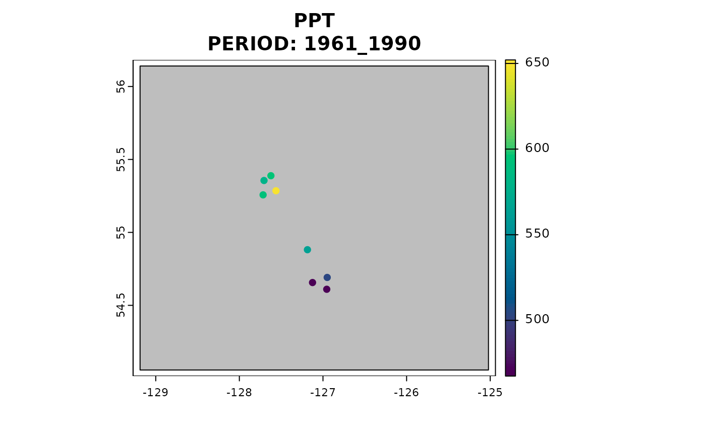

Self-contained change-factor downscaling of observed and simulated climate data
downscale.Rddownscale() provides downscaled climate variables for user-specified
locations.
It adapts a simple change-factor (aka "delta') downscaling
approach originally implemented in ClimateNA.
This approach downscales climate data in three stages:
Change-factor downscaling of coarse-resolution (50-200km grid) monthly temperature and precipitation data from climate models or observational sources to high-resolution (800m grid);
Elevation adjustment of temperature variables to provide scales finer than the high-resolution reference grid; and
Calculating derived variables from the downscaled monthly temperature and precipitation variables.
See vignette("methods_downscaling") for a description of the downscaling methodology.
downscale() is a user-friendly wrapper for downscale_core()
Usage
downscale(
xyz,
which_refmap = "auto",
obs_periods = NULL,
obs_years = NULL,
obs_ts_dataset = NULL,
gcms = NULL,
ssps = NULL,
gcm_periods = NULL,
gcm_ssp_years = NULL,
gcm_hist_years = NULL,
max_run = 0L,
cache = TRUE,
...
)Arguments
- xyz
a
data.framewith the following columns "long", "lat", "elev", and a unique "id". Any extra columns will be ignored and not output.- which_refmap
character. Which map of 1961-1990 climatological normals to use as the high-resolution reference climate map for downscaling. Default is "auto", which selects, for each query point, the best available climatological normals map in declining order of
"refmap_prism","refmap_climr", and"refmap_climatena". Other options are one oflist_refmaps(), which will provide a consistent reference map for all points.- obs_periods
character. Which historical period for observational climate data, averaged over this period. Options are
list_obs_periods(). DefaultNULL- obs_years
integer. Vector of years to obtain individual years or time series of observational climate data. Default
NULL. Seelist_obs_years()for available years.- obs_ts_dataset
character. The dataset to use for observational time series data. Options are
"climatena"for the ClimateNA gridded time series or"cru.gpcc"for the combined Climatic Research Unit TS dataset (for temperature) and Global Precipitation Climatology Centre dataset (for precipitation). Defaults toNULL.- gcms
character. Vector of global climate model names. Options are
list_gcms(). Defaults toNULL.- ssps
character. Vector of SSP-RCP scenarios (representative concentration pathways paired with shared socioeconomic pathways). Options are
list_ssps(). Defaults to all scenarios available.- gcm_periods
character. 20-year reference periods for GCM simulations. Options are
list_gcm_periods(). Defaults toNULL.- gcm_ssp_years
character. Timeseries years for GCM simulations of future scenarios specified by
ssps. Seelist_gcm_ssp_years()for available years. Defaults toNULL.- gcm_hist_years
character. Timeseries years for GCM simulations of the historical scenario. See
list_gcm_hist_years()for available years. Defaults toNULL.- max_run
integer. Maximum number of model runs to include. A value of 0 returns the
ensembleMeanonly. Runs are included in the order they are found in the models data untilmax_runis reached. Defaults to 0L.- cache
logical. Cache data locally? Default
TRUE- ...
other arguments passed to
downscale_core(). Namely:return_refperiod,vars,out_spatialandplot
Value
data.table of downscaled climate variables for each location.
All outputs are returned in one table.
Details
downscale_core() parameters can be applied in downscale(). For example,
setting ppt_lr = TRUE in downscale() will apply elevation adjustment to precipitation values.
Although which_refmap = "auto" is the default, users are cautioned that
this can produce artefacts associated with downscaling to different reference
climate maps within and outside the western North American boundary of refmap_climr.
We recommend that queries spanning this boundary use which_refmap = "refmap_climatena".
Examples
## provide or create a dataframe of lon, lat, elev, and id - usually read from csv file
in_xyz <- data.frame(
lon = c(-127.7052, -127.6227, -127.5623, -127.7162, -127.1858, -127.125, -126.9495, -126.9550),
lat = c(55.3557, 55.38847, 55.28537, 55.25721, 54.88135, 54.65636, 54.6913, 54.61025),
elev = c(291, 296, 626, 377, 424, 591, 723, 633),
id = 1:8
)
## historic observational time series
vars <- c("PPT", "CMD", "Tave_07")
climate_norms_hist <- downscale(
xyz = in_xyz,
which_refmap = "auto",
return_refperiod = TRUE,
obs_periods = "2001_2020",
vars = vars,
out_spatial = TRUE, plot = "PPT"
) ## specify desired variables to plot
#> Welcome to climr!
#> 'gcms' is missing. 'max_run' will be ignored
#> Getting normals...
#> Downloading new data...
#> .
#> Caching data...
#> Getting observed anomalies...
#> Downloading observed period anomalies
#> .
#> Caching data...
#> Downscaling!!
#> Plotting results for a single period/GCM/run/SSP

## as a data.table
climate_norms_hist <- downscale(
xyz = in_xyz, which_refmap = "auto",
return_refperiod = TRUE,
vars = vars,
out_spatial = FALSE, plot = "PPT"
) ## specify desired variables to plot
#> Welcome to climr!
#> 'gcms' is missing. 'max_run' will be ignored
#> Getting normals...
#> Retrieving from cache...
#> Downscaling!!
#> Warning: 'gcms', 'gcm_ssp_ts', 'gcm_hist_ts', 'obs' and 'obs_ts' are missing. Nothing to downscale.
## future projections for annual variables from three models
climate_norms_fut <- downscale(
xyz = in_xyz, which_refmap = "auto",
gcms = list_gcms()[c(1,5,6)],
ssps = list_ssps()[2],
gcm_periods = list_gcm_periods()[1:2],
# gcm_ssp_years = 2020:2060,
max_run = 3, #' we want 3 individual runs for the model
vars = list_vars("Annual")
)
#> Welcome to climr!
#> Getting normals...
#> Retrieving from cache...
#> Getting GCMs...
#> Downloading GCM anomalies
#> .
#> Caching data...
#> Downloading GCM anomalies
#> .
#> Caching data...
#> Downloading GCM anomalies
#> .
#> Caching data...
#> Downscaling!!